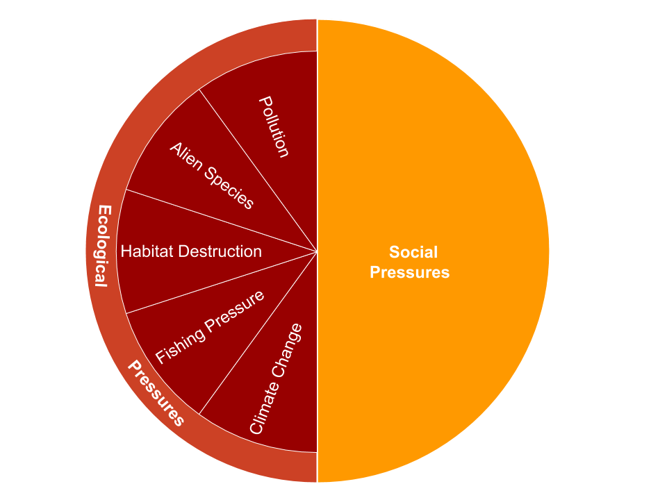

── Attaching core tidyverse packages ──────────────────────── tidyverse 2.0.0 ──
✔ dplyr 1.1.4 ✔ readr 2.1.4
✔ forcats 1.0.0 ✔ stringr 1.5.1
✔ ggplot2 3.5.0 ✔ tibble 3.2.1
✔ lubridate 1.9.3 ✔ tidyr 1.3.1
✔ purrr 1.0.2
── Conflicts ────────────────────────────────────────── tidyverse_conflicts() ──
✖ dplyr::filter() masks stats::filter()
✖ dplyr::lag() masks stats::lag()
ℹ Use the conflicted package (<http://conflicted.r-lib.org/>) to force all conflicts to become errors
here() starts at /Users/sophialec/Documents/OHI/ohi-methods
Attaching package: 'kableExtra'
The following object is masked from 'package:dplyr':
group_rowsPressure
The pressure score, \(p\), describes the cumulative pressures acting on a goal which suppress the goal score. Pressure scores range from 0 to 1, and they are calculated for each goal and region and include both ecological (\(p_{E}\)) and social pressures (\(p_{S}\)) (Table 5.1, Figure 5.2), such that:
\[ { p }\quad =\quad \gamma *{ p }_{ E }\quad +\quad (1-\gamma )*{ p }_{ S }, (Eq. 5.6) \]
where \(\gamma\) is the relative weight for ecological vs. social pressures and equals 0.5 for the global assessment. At global scales, little evidence exists to support unequal weighting of ecological and social pressures for most goals; furthermore, unequal weighting would require unique values for each goal and there is currently no empirical work to guide such decisions. At local or regional scales there may be clear evidence for unequal weights per goal and \(\gamma\) should be adjusted accordingly.
Figure 5.2. Pressure components Pressure is calculated using both social and ecological pressures. Ecological pressures include 5 subcategories (fishing pressure, habitat destruction, climate change, water pollution, and species/genetic introductions).

Table 5.1. Pressure data and categories Description of the stressor data layers used to calculate overall pressure for each goal and region for the global assessment (descriptions of pressure data in section 6). Each data layer is assigned to an ecological or social category, and ecological data are assigned to one of five subcategories.
| Data | Short name | Category | Subcategory | Description |
|---|---|---|---|---|
| Chemical pollution | po_chemicals | ecological | pollution | Modeled chemical pollution within EEZ from commercial shipping traffic, ports and harbors, land-based pesticide use (organic pollution), and urban runoff (inorganic pollution) |
| Coastal chemical pollution | po_chemicals_3nm | ecological | pollution | Modeled chemical pollution within 3nm of coastline from commercial shipping traffic, ports and harbors, land-based pesticide use (organic pollution), and urban runoff (inorganic pollution) |
| Pathogen pollution | po_pathogens | ecological | pollution | Percent of population without access to improved sanitation facilities as a proxy for pathogen pollution |
| Nutrient pollution | po_nutrients | ecological | pollution | Modeled nutrient pollution within EEZ based on crop fertilizer and manure consumption |
| Coastal nutrient pollution | po_nutrients_3nm | ecological | pollution | Modeled nutrient pollution within 3nm based on crop fertilizer and manure consumption |
| Marine plastics | po_trash | ecological | pollution | Global marine plastic pollution |
| Nonindigenous species | sp_alien | ecological | alien species | Measure of harmful invasive species |
| Genetic escapes | sp_genetic | ecological | alien species | Introduced mariculture species (Mariculture Sustainability Index) as a proxy for genetic escapes |
| Subtidal soft bottom habitat destruction | hd_subtidal_sb | ecological | habitat destruction | Pressure on soft-bottom habitats due to demersal destructive commercial fishing practices (e.g., trawling) |
| Subtidal hardbottom habitat destruction | hd_subtidal_hb | ecological | habitat destruction | Presence of blast fishing as an estimate of subtidal hard bottom habitat destruction |
| Intertidal habitat destruction | hd_intertidal | ecological | habitat destruction | Coastal population density (25 mi from shore) as a proxy for intertidal habitat destruction |
| Coral harvest pressure | hd_coral | ecological | habitat destruction | Pressure on coral due to harvesting as a natural product |
| High bycatch due to commercial fishing | fp_com_hb | ecological | fishing pressure | Pressure due to industrial high bycatch fishing identified by discard tonnes and standardized by NPP |
| Low bycatch due to commercial fishing | fp_com_lb | ecological | fishing pressure | Pressure due to industrial low bycatch fishing identified by reported and IUU tonnes and standardized by NPP |
| Low bycatch due to artisanal fishing | fp_art_lb | ecological | fishing pressure | Pressure due to artisanal low bycatch fishing identified by reported and IUU tonnes and standardized by NPP |
| High bycatch due to artisanal fishing | fp_art_hb | ecological | fishing pressure | Pressure due to artisanal high bycatch fishing identified by discard tonnes and standardized by NPP |
| Targeted harvest of cetaceans and marine turtles | fp_targetharvest | ecological | fishing pressure | Targeted harvest of cetaceans and marine turtles |
| Sea surface temperature | cc_sst | ecological | climate change | Presure due to increasing extreme sea surface temperature events |
| Ocean acidification | cc_acid | ecological | climate change | Pressure due to increasing ocean acidification, scaled using biological thresholds |
| UV radiation | cc_uv | ecological | climate change | Pressure due to increasing frequency of UV anomolies |
| Sea level rise | cc_slr | ecological | climate change | Pressure due to rising mean sea level |
| Weakness of governance | ss_wgi | social | social | Inverse of World Governance Indicators (WGI) six combined scores |
| Weakness of social progress | ss_spi | social | social | Inverse of Social Progress Index scores |
Ecological pressure
We assessed five broad, globally-relevant categories of ecological stressors: fishing pressure, habitat destruction, climate change (including ocean acidification), water pollution, and species introductions (invasive species and genetic escapes). The five categories are intended to capture known pressures to the social-ecological system associated with each goal. Each pressure category may include several stressors. The intensity of each stressor within each OHI region is scaled from 0 to 1, with 1 indicating the highest stress (e.g., example of one of these data layers is sea surface temperature).
We determined the rank sensitivity of each goal/subgoal to each stressor (or, when possible, an element of the goal, such as a specific habitat). We ranked ecological pressures as having ‘high’ (score = 3), ‘medium’ (score = 2), ‘low’ (score = 1), or ‘no’ (score = NA) impact (Table 5.2). Wherever possible we relied on peer-reviewed literature to establish these rankings, and relied on our collective expert judgment in cases with no available literature (Table S28 in Halpern et al. 2012). The pressure ranks are based on a rough estimate of the global average intensity and frequency of the stressor. We recognize that this will create over- and under-estimates for different places around the planet, but to address such variance in a meaningful way would require a separate weighting matrix for every single region on the planet, which is not feasible at this time.
Table 5.2. Pressure matrix Rank sensitivity of each goal (or, goal element) to each stressor.
| goal | element | cc_acid | cc_slr | cc_sst | cc_uv | fp_art_hb | fp_art_lb | fp_com_hb | fp_com_lb | fp_targetharvest | hd_coral | hd_intertidal | hd_subtidal_hb | hd_subtidal_sb | po_chemicals | po_chemicals_3nm | po_nutrients | po_nutrients_3nm | po_pathogens | po_trash | sp_alien | sp_genetic | ss_spi | ss_wgi |
|---|---|---|---|---|---|---|---|---|---|---|---|---|---|---|---|---|---|---|---|---|---|---|---|---|
| AO | NA | 3 | 2 | 1 | 1 | 3 | 1 | 1 | 1 | 1 | 1 | 1 | ||||||||||||
| CP | coral | 1 | 2 | 3 | 1 | 1 | 3 | 1 | 2 | 1 | 1 | 1 | ||||||||||||
| CP | kelp | 1 | 2 | 3 | 2 | 3 | 1 | 1 | 1 | |||||||||||||||
| CP | mangrove | 1 | 3 | 1 | 1 | 1 | 1 | |||||||||||||||||
| CP | saltmarsh | 2 | 3 | 1 | 2 | 1 | 1 | 1 | ||||||||||||||||
| CP | seagrass | 1 | 2 | 2 | 3 | 2 | 3 | 1 | 1 | 1 | ||||||||||||||
| CP | seaice shoreline | 2 | 3 | 1 | 1 | |||||||||||||||||||
| CS | mangrove | 1 | 3 | 1 | 1 | 1 | 1 | |||||||||||||||||
| CS | saltmarsh | 2 | 3 | 1 | 2 | 1 | 1 | 1 | ||||||||||||||||
| CS | seagrass | 1 | 2 | 2 | 3 | 2 | 3 | 1 | 1 | 1 | ||||||||||||||
| CS | tidal flat | 2 | 2 | 3 | 2 | 2 | 1 | 1 | 1 | |||||||||||||||
| CW | NA | 3 | 3 | 3 | 3 | 1 | 1 | |||||||||||||||||
| ECO | Aquarium Trade Fishing | 1 | 1 | 3 | 1 | 3 | 2 | 1 | 1 | 1 | 1 | |||||||||||||
| ECO | Commercial Fishing | 2 | 1 | 3 | 1 | 1 | 2 | 2 | 2 | 1 | 1 | 1 | 1 | 1 | ||||||||||
| ECO | Mariculture | 1 | 2 | 3 | 1 | 1 | ||||||||||||||||||
| ECO | Marine Mammal Watching | 1 | 1 | 1 | 1 | |||||||||||||||||||
| ECO | Tourism | 2 | 3 | 3 | 3 | 3 | 1 | 1 | ||||||||||||||||
| ECO | Wave & Tidal Energy | 1 | 1 | 1 | ||||||||||||||||||||
| FIS | NA | 2 | 1 | 3 | 1 | 1 | 2 | 2 | 1 | 1 | 1 | 1 | 1 | 1 | ||||||||||
| HAB | coral | 1 | 2 | 3 | 1 | 3 | 1 | 3 | 1 | 2 | 1 | 1 | 1 | |||||||||||
| HAB | kelp | 1 | 2 | 2 | 2 | 3 | 1 | 1 | 1 | |||||||||||||||
| HAB | mangrove | 1 | 3 | 1 | 1 | 1 | 1 | |||||||||||||||||
| HAB | saltmarsh | 2 | 3 | 1 | 2 | 1 | 1 | 1 | ||||||||||||||||
| HAB | seagrass | 1 | 2 | 2 | 3 | 2 | 3 | 1 | 1 | 1 | ||||||||||||||
| HAB | seaice edge | 1 | 3 | 1 | 1 | |||||||||||||||||||
| HAB | soft bottom | 1 | 3 | 1 | 3 | 2 | 2 | 1 | 1 | 1 | ||||||||||||||
| HAB | tidal flat | 2 | 2 | 3 | 2 | 2 | 1 | 1 | 1 | |||||||||||||||
| ICO | NA | 1 | 1 | 2 | 2 | 2 | 3 | 2 | 3 | 1 | 1 | 1 | 1 | 1 | ||||||||||
| LIV | Commercial Fishing | 2 | 1 | 3 | 1 | 1 | 2 | 2 | 2 | 1 | 1 | 1 | 1 | 1 | ||||||||||
| LIV | Mariculture | 1 | 2 | 3 | 1 | 1 | ||||||||||||||||||
| LIV | Marine Mammal Watching | 1 | 1 | 1 | 1 | |||||||||||||||||||
| LIV | Ports & Harbors | 2 | 1 | 1 | 1 | |||||||||||||||||||
| LIV | Ship & Boat Building | 1 | 1 | |||||||||||||||||||||
| LIV | Tourism | 2 | 3 | 3 | 3 | 3 | 1 | 1 | ||||||||||||||||
| LIV | Transportation & Shipping | 1 | 1 | 1 | ||||||||||||||||||||
| LIV | Wave & Tidal Energy | 1 | 1 | 1 | ||||||||||||||||||||
| LSP | NA | 1 | 3 | 2 | 2 | 2 | 3 | 1 | 1 | 1 | ||||||||||||||
| MAR | NA | 1 | 2 | 3 | 1 | 1 | ||||||||||||||||||
| NP | fish oil | 1 | 2 | 2 | 2 | 1 | 1 | 1 | 1 | |||||||||||||||
| NP | ornamentals | 1 | 3 | 1 | 3 | 2 | 1 | 1 | 1 | 1 | ||||||||||||||
| NP | seaweeds | 1 | 1 | 2 | 2 | 1 | 1 | 1 | ||||||||||||||||
| SPP | NA | 1 | 1 | 1 | 2 | 1 | 3 | 1 | 1 | 2 | 2 | 3 | 2 | 3 | 1 | 1 | 1 | 1 | 1 | |||||
| TR | NA | 2 | 3 | 3 | 3 | 3 | 1 | 1 |
To estimate the cumulative effect of the ecological pressures, \(P_E\), we first determined the cumulative pressure, \(p\), within each ecological category, \(i\) (e.g., pollution, fishing, etc.):
\[ { p }_{ i }\quad =\quad \frac { \displaystyle\sum _{ i=1 }^{ N }{ { w }_{ i }{ s }_{ i } } }{ 3 }, (Eq. 5.7) \]
Where \(w_i\) is the sensitivity ranks (Table 5.2) describing the relative sensitivity of each goal to each stressor, and \(s_i\) is intensity of the stressor in each region on a scale of 0-1. We divided by the maximum weighted intensity that could be achieved by the worst stressor (max = 3.0).
If \(p_i\) > 1.0, we set the value equal to 1.0. This formulation assumes that any cumulative pressure load greater than the maximum intensity of the worst stressor is equivalent to maximum stressor intensity.
For the goals for which sensitivity ranks were assigned for specific habitats or livelihood sectors (i.e., goal elements), we calculated the weighted sum of the pressures for only those habitats or sectors that were present in the country.
The overall ecological pressure, \(p_E\), acting on each goal and region was calculated as the weighted-average of the pressure scores, \(p\), for each category, \(i\), with weights set as the maximum rank in each pressure category (\(w_{i\_max}\)) for each goal, such that:
\[ { p }_{ E }\quad =\quad \frac { \displaystyle\sum _{ i=1 }^{ N }{ { (w }_{ i\_ max }*{ p }_{ i }) } }{ \displaystyle\sum_{ i=1 }^{ N } { { w }_{ i\_ max } } }, (Eq. 5.8) \]
Stressors that have no impact drop out rather than being assigned a rank of zero, which would affect the average score.
Caveats
There were a number of ecological pressures not included in our assessment, including altered sediment regimes, noise and light pollution, toxic chemicals from point sources, nutrient pollution from atmospheric deposition and land-based sources other than fertilizer application to agricultural land. In all cases, global data do not exist in a format that would allow for adequate comparisons within and among countries. Future global or regional iterations of the Index could include these data as they become available.
The calculation of ecological pressures is sensitive to the number of stressors within each category (but not to the number of categories). Inclusion of additional stressors within categories would require careful calibration of ranks so that the cumulative effect of a larger number of stressors does not overestimate pressure.
A key assumption in our assessment of ecological pressures is that each goal has a linear and additive response to increases in intensity of the stressors. Clearly many ecosystems respond non-linearly to increased stressor intensity, exhibiting threshold responses, and there are likely nonlinear interactions among stressors. Unfortunately little is known about the nature of these types of nonlinearities and interactions so we could not include them in any meaningful way.
Social pressures
Social pressures describe the lack of effectiveness of government and social institutions. Social stressors are described for each region on a scale of 0 to 1 (with one indicating the highest pressure). Social pressure is then calculated as the average of the social stressors:
\[ { p }_{ S }\quad =\quad \frac { \displaystyle\sum _{ i=1 }^{ N }{ z_{ i } } }{ N }, (Eq. 5.9) \]
where \(z_{i}\) are the social pressure measures specific to the goal. Unequal weighting may be appropriate in some cases but is difficult to assess currently, particularly at the global scale.